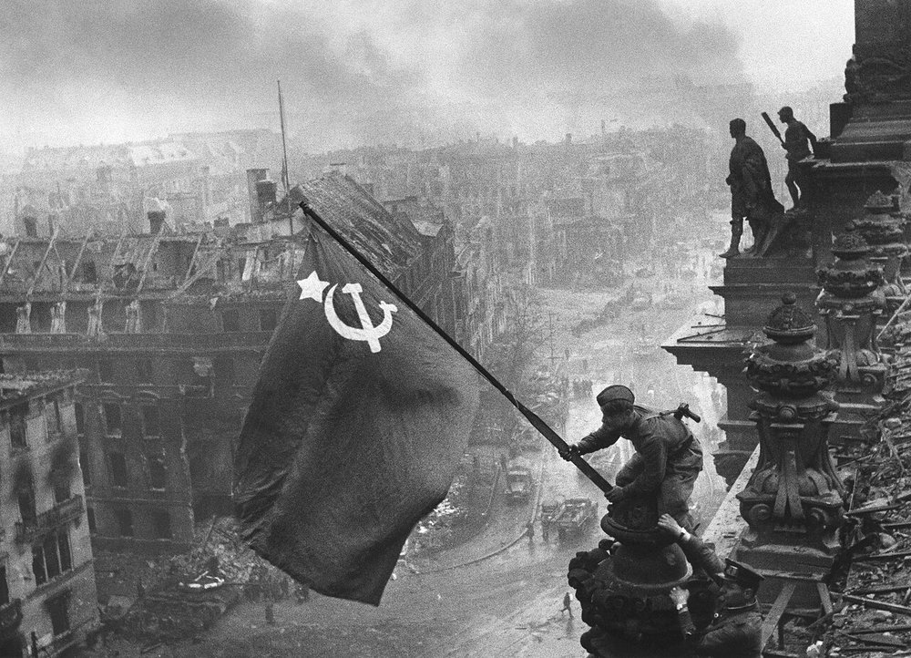

Raising a Flag over the Reichstag
Yevgeny Khaldei · 2 May 1945 · Photograph
In copyright. Look and learn: shown for study, not for download.
Yevgeny Khaldei, a TASS photographer of twenty-eight, had seen Joe Rosenthal's Iwo Jima picture and got his uncle to sew a large flag from three tablecloths. On 2 May 1945 he took it onto the Reichstag and asked soldiers passing by to help him stage the shot; the man fixing the flag was an eighteen-year-old private, Aleksei Kovalev. He used a whole 36-exposure roll. Before it ran in Ogonyok on 13 May, the editor noticed a second watch on one soldier's wrist, and Khaldei removed it with a needle and added smoke from another frame.